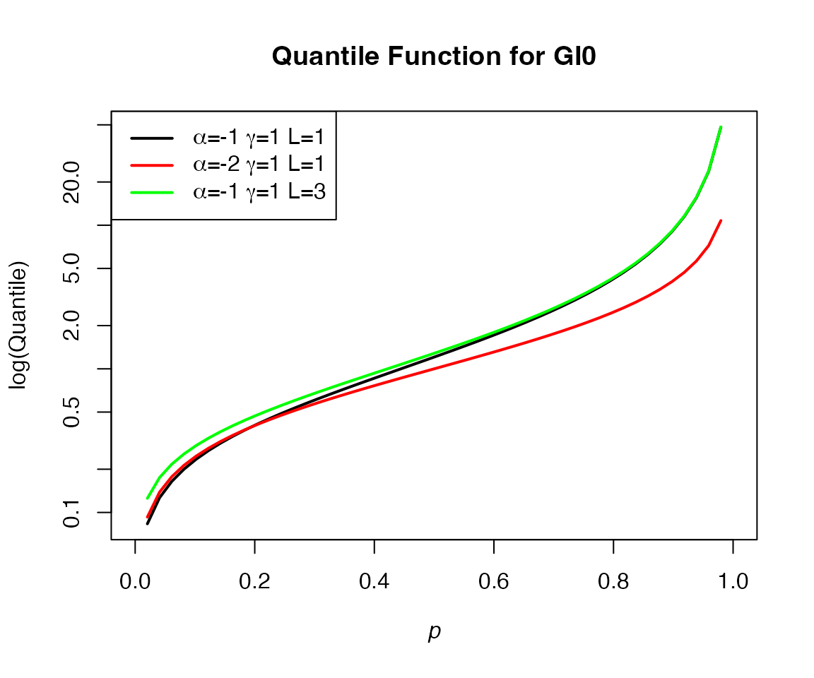

GI0
GI0.RmdIntroduction
This vignette introduces the GI0 package and its
functions. The \(\mathcal{G}_I^0\)
distribution is a modified version of the Fisher-Snedekor distribution
that is useful for describing positive data with extreme variation
(Frery et al, 1997). The probability density function of the \(\mathcal{G}_I^0\) distribution is:
\(\frac{L^L\Gamma(L-\alpha)}{\gamma^\alpha\Gamma(-\alpha)\Gamma(L)}\frac{z^{\alpha-1}}{(\gamma+zL)^{L-\alpha}}\)
with \(-\alpha, \gamma, z>0\) and \(L\ge1\).
The GI0 package includes four functions:
-
dGI0gives the density for the \(\mathcal{G}_I^0\) distribution -
pGI0gives the cumulative distribution function for the \(\mathcal{G}_I^0\) distribution -
qGI0gives the quantile function for the \(\mathcal{G}_I^0\) distribution -
rGI0is a pseudo-random number generator for sampling from the \(\mathcal{G}_I^0\) distribution
In Section 1 of this vignette, we provide examples of applying the density, distribution and quantile functions. In Section 2, we draw random samples from \(\mathcal{G}_I^0\) and review the sampled distribution in a histogram. And finally, in Section 3, we analyse the \(\mathcal{G}_I^0\) distribution using the Cullen and Frey plot.
library(GI0)Section 1
In this section we will look at examples of applying the probability density function, cumulative distribution function, and the quantile function.
dGI0
We calculate the density using different values of the parameters \(\alpha\), \(\gamma\) and \(L\), then plot the values against both linear and semilogarithmic scales.
# Create the sequence of input values
x <- seq(0.001, 10, length=100)
# Apply the dGI) function and plot the output in a line graph
plot(x, dGI0(x, p_alpha=-1, p_gamma=1, p_Looks=1), type = "l", lwd = 2,
xlab = expression(italic(z)), ylab = "Density",
main="GI0 Densities")
lines(x, dGI0(x, p_alpha=-2, p_gamma=1, p_Looks=1), col="red",lty=1, lwd = 2)
lines(x, dGI0(x, p_alpha=-1, p_gamma=5, p_Looks=1), col="blue",lty=1, lwd = 2)
lines(x, dGI0(x, p_alpha=-1, p_gamma=1, p_Looks=3), col="green",lty=1, lwd = 2)
l1<- expression(paste(alpha, "=-1 ", gamma, "=1 L=1"))
l2<- expression(paste(alpha, "=-2 ", gamma, "=1 L=1"))
l3<- expression(paste(alpha, "=-1 ", gamma, "=5 L=1"))
l4<- expression(paste(alpha, "=-1 ", gamma, "=1 L=3"))
legend(x = "topright",
legend = c(l1, l2, l3, l4),
lty = c(1,1,1,1),
col = c("black", "red","blue","green"),
lwd = 2)
# Semi log scale
plot(x, dGI0(x, p_alpha=-1, p_gamma=1, p_Looks=1), type = "l", lwd = 2,
xlab = expression(italic(z)), ylab = "log(Density)",
main="GI0 Densities", log="y")
lines(x, dGI0(x, p_alpha=-2, p_gamma=1, p_Looks=1), col="red",lty=1, lwd = 2)
lines(x, dGI0(x, p_alpha=-1, p_gamma=5, p_Looks=1), col="blue",lty=1, lwd = 2)
lines(x, dGI0(x, p_alpha=-1, p_gamma=1, p_Looks=3), col="green",lty=1, lwd = 2)
legend(x = "topright",
legend = c(l1, l2, l3, l4),
lty = c(1,1,1,1),
col = c("black", "red","blue","green"),
lwd = 2) pGI0
We calculate the cumulative distribution function using different values of the parameters \(\alpha\), \(\gamma\) and \(L\), then plot the values against both linear and semilogarithmic scales.
plot(x, pGI0(x, p_alpha=-1, p_gamma=1, p_Looks=1), type = "l", lwd = 2,
xlab = expression(italic(z)), ylab = "Probability",
main="Cumulative Distribution Function for GI0")
lines(x, pGI0(x, p_alpha=-2, p_gamma=1, p_Looks=1), col="red",lty=1, lwd = 2)
lines(x, pGI0(x, p_alpha=-1, p_gamma=5, p_Looks=1), col="blue",lty=1, lwd = 2)
lines(x,pGI0(x, p_alpha=-1, p_gamma=1, p_Looks=3), col="green",lty=1, lwd = 2)
legend(x = "bottomright",
legend = c(l1, l2, l3, l4),
lty = c(1,1,1,1),
col = c("black", "red","blue","green"),
lwd = 2)
#Semi-log scale
plot(x, pGI0(x, p_alpha=-1, p_gamma=1, p_Looks=1), type = "l", lwd = 2,
xlab = expression(italic(z)), ylab = "log(Probability)",
main="Cumulative Distribution Function for GI0", log="y")
lines(x, pGI0(x, p_alpha=-2, p_gamma=1, p_Looks=1), col="red",lty=1, lwd = 2)
lines(x, pGI0(x, p_alpha=-1, p_gamma=5, p_Looks=1), col="blue",lty=1, lwd = 2)
lines(x, pGI0(x, p_alpha=-1, p_gamma=1, p_Looks=3), col="green",lty=1, lwd = 2)
legend(x = "bottomright",
legend = c(l1, l2, l3, l4),
lty = c(1,1,1,1),
col = c("black", "red","blue","green"),
lwd = 2) qGI0
We calculate the quantile function using different values of the parameters \(\alpha\) and \(L\), then plot the values against both linear and semilogarithmic scales. Note: The parameter \(\gamma\) is not used in the function.
p <- seq(0,1,length=50)
plot(p,qGI0(p, p_alpha=-1, p_gamma=2, p_Looks=2), type = "l", lwd = 2,
xlab = expression(italic(p)), ylab = "Quantile",
main="Quantile Function for GI0")
lines(p, qGI0(p, p_alpha=-2, p_gamma=2, p_Looks=2), col="red",lty=1, lwd = 2)
lines(p,qGI0(p, p_alpha=-1, p_gamma=2, p_Looks=3), col="green",lty=1, lwd = 2)
legend(x = "topleft",
legend = c(l1, l2, l4),
lty = c(1,1,1),
col = c("black", "red","green"),
lwd = 2)
# Semi-log scale
plot(p,qGI0(p, p_alpha=-1, p_gamma=2, p_Looks=2), type = "l", lwd = 2,
xlab = expression(italic(p)), ylab = "log(Quantile)",
main="Quantile Function for GI0", log="y")
lines(p, qGI0(p, p_alpha=-2, p_gamma=2, p_Looks=2), col="red",lty=1, lwd = 2)
lines(p,qGI0(p, p_alpha=-1, p_gamma=2, p_Looks=3), col="green",lty=1, lwd = 2)
legend(x = "topleft",
legend = c(l1, l2, l4),
lty = c(1,1,1),
col = c("black", "red","green"),
lwd = 2) 
Section 2
In this section, we will sample from the \(\mathcal{G}_I^0\) distribution using the
rGI0 function and plot a histogram to examine the sampled
values. This function uses a ratio of two independently sampled gamma
variables to produce the random \(\mathcal{G}_I^0\) variable. This is just
one method of sampling from \(\mathcal{G}_I^0\), however, more efficient
methods exist (Chan et al, 2018).
rGI0
# Sample from the GI0 distirbution
set.seed(111)
z<- rGI0(1000, p_alpha=-2, p_gamma=4, p_Looks=3)
df <- data.frame(z)
# Plot a histogram of the random draws, overlay the kernel density
# Use Freedman-Diaconis equation to calculate the number of bins
hist(df$z, breaks = "Freedman-Diaconis", prob=TRUE,
xlab=expression(italic(z)), ylab="Density",
main="Distribution of 1000 random draws from GI0 distribution")
lines(density(df$z), col = "blue", lwd=2)We note that the distribution is right skewed due to the outliers in the upper tail, which is indicative of the high variation of this distribution. In the next plot, we truncate the x axis to view the core distribution in closer detail.
hist(df$z, breaks = "Freedman-Diaconis", prob=TRUE,
xlab=expression(italic(z)), ylab="Density",
main="Distribution of 1000 random draws from GI0 distribution",
xlim = c(0, 20))
lines(density(df$z), col = "blue", lwd=2)Section 3
In this section, we will examine a bootstrapped sample of values from the \(\mathcal{G}_I^0\) distribution in the Cullen and Frey plot, which plots the skewness against kurtosis for the sample alongside common distributions (Cullen and Frey, 1999). We use the fitdistrplus pacakge to generate the plot (Delignette-Muller and Dutang, 2015).
The parameters used to generate the sample are:
- \(\alpha = -3\)
- \(\gamma = 2\)
- \(L = 3\)
We can see that the \(\mathcal{G}_I^0\) distribution does not adhere to any of the theoretical distributions pictured. It partially overlaps with the beta and gamma distributions, but no single distribution appears to be a suitable match for \(\mathcal{G}_I^0\).
# set.seed(123)
# rGI0(1000, p_alpha=-3, p_gamma=2, p_Looks=3)
knitr::include_graphics("CullenFreyPlot.png")
References
Chan D., Rey A., Gambini J., Frery A., 2018. Sampling from the ùí¢I0 distribution, Monte Carlo Methods and Applications, 24, 4, 271-287. doi: 10.1515/mcma-2018-2023.
Cullen, A. C., Frey, H. C., 1999. Probabilistic Techniques in Exposure Assessment. Springer New York, NY.
Delignette-Muller, M. L., Dutang, C., 2015. fitdistrplus: An R Package for Fitting Distributions, Journal of Statistical Software, 64, 4. doi: 10.18637/jss.v064.i04.
Frery, A. C., Müller, H.-J., Yanasse, C. C. F., Sant’Anna, S. J. S., 1997. A model for extremely heterogeneous clutter, IEEE Transactions on Geoscience and Remote Sensing, 35, 3, 648–659. doi: 10.1109/36.581981.